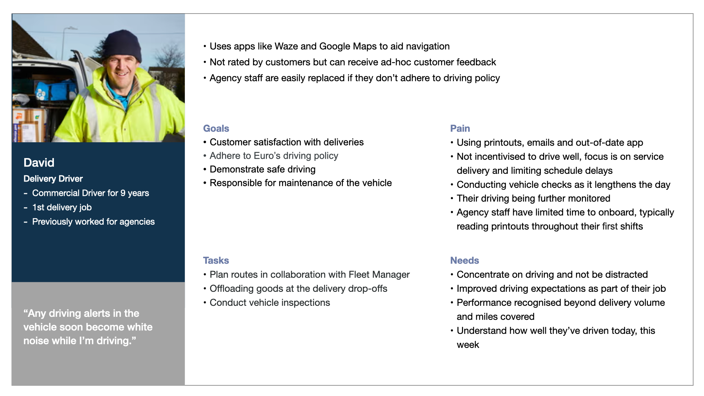
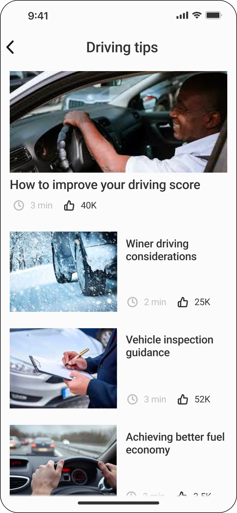
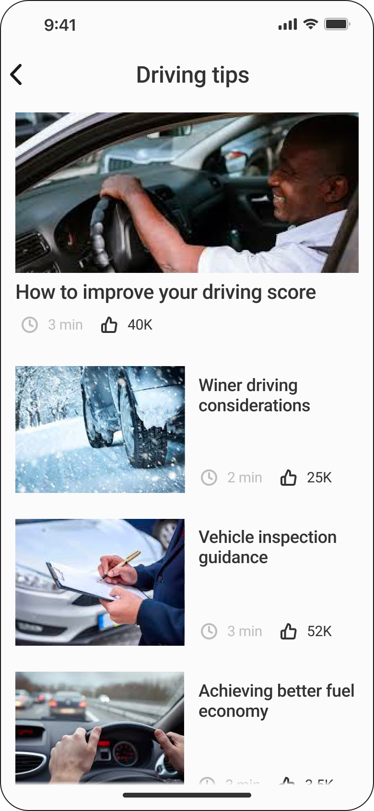

BACKGROUND
Customer Retention Opportunity
Aioi Nissay Dowa Europe (AND-E) alongside partner Toyota Finance had identified an opportunity to
offer business customers a lightweight fleet management capability as part of their insurance package. An alternative
to provisioning a dedicated fleet management product, aiming to improve customer loyalty and retention.
Leveraging recent improvements in the telematics capability used by multiple propositions to monitor driver performance and car maintenance. A
dashboard had been designed by the products development team with an existing consumer app adapted for a b2b context.
Negative customer feedback
Piloting the platform with a client had resulted in negative feedback, the ask was for me to come in and 'fix the UI'. I was conscious that more
understanding was required of target users than just executing an improved UI, making the case to understand more about the user’s situations before design work started.
RESEARCH
Field Study with an auto parts supplier
I conducted initial field studies with a client that was trialling the tool, an auto parts supplier. Interviewing two fleet managers
and conducting a cognitive walkthrough of their main tasks. Unfortunately, it wasn’t possible to spend time with drivers,
instead using anecdotal information from fleet managers and treated these as assumptions for validation.
I decided there wasn’t a need to measure the current tool’s performance to justify improvements. As the focus was to generate
a current understanding of how people do their jobs and identify opportunities to make the system more appropriate.
Created Personas to define discoveries with product team
Initial sessions with the product team demonstrated an incoherent understanding of customer insight and their goals, with domain concepts
communicated inconsistently. Personas synthesised findings of the field study into a simple format of headlines to be easily used as guidance
about the main users of the platform.

DESIGN
Fleet management dashboard
The goal of the initial release was to create a simple UI, establishing a foundation to extend in future releases.
Main changes included:
- Reduce UI flexibility as customisation options easily made the tool hard to use. Instead, applying a UI screen architecture with dedicated screens
for primary data groupings to be easily navigated via multiple entry points
- Applying an F-shaped reading pattern to the screen structure to improve scannability. Creating a series of rows for ‘at a glance’ behaviour exhibited
by fleet managers - as they switch between systems and views
- Data-heavy UI hygiene:
- Comprehension of field labels: re-wording or decomposing into field value suffixesß
- Standardised visuals & icons to work across dashboard and mobile
- Round up numbers - multiple decimal places not needed by target user groups


 
